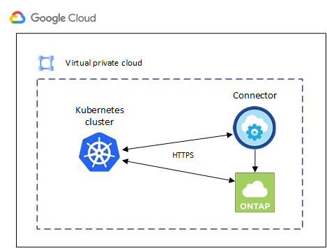
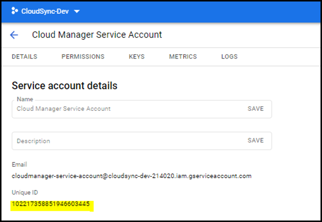

Commencez
Commencez
Conditions requises pour les clusters Kubernetes dans Google Cloud
 Suggérer des modifications
Suggérer des modifications
Vous pouvez ajouter et gérer des clusters Google Kubernetes Engine (GKE) gérés et des clusters Kubernetes autogérés dans Google à l'aide de BlueXP. Avant de pouvoir ajouter les clusters à BlueXP, assurez-vous que les conditions suivantes sont remplies.

|
Cette rubrique utilise cluster Kubernetes où la configuration est la même pour les clusters GKE et Kubernetes autogérés. Le type de cluster est spécifié où la configuration diffère. |
De formation
- Astra Trident
-
Il est nécessaire de disposer de l'une des quatre versions les plus récentes d'Astra Trident. Vous pouvez installer ou mettre à niveau Astra Trident directement à partir de BlueXP. Vous devriez "passez en revue les prérequis" Avant d'installer Astra Trident
- Cloud Volumes ONTAP
-
Cloud Volumes ONTAP doit se trouver dans BlueXP, sous le même compte de location, espace de travail et connecteur que le cluster Kubernetes. "Accédez à la documentation Astra Trident pour connaître les étapes de configuration".
- Connecteur BlueXP
-
Un connecteur doit être exécuté dans Google avec les autorisations requises. Pour en savoir plus.
- Connectivité réseau
-
La connectivité réseau est requise entre le cluster Kubernetes et le connecteur et entre le cluster Kubernetes et Cloud Volumes ONTAP. Pour en savoir plus.
- Autorisation RBAC
-
BlueXP prend en charge les clusters RBAC avec et sans Active Directory. Le rôle connecteur BlueXP doit être autorisé sur chaque cluster GKE. Pour en savoir plus.
Préparer un connecteur
BlueXP Connector dans Google est nécessaire pour découvrir et gérer les clusters Kubernetes. Vous devrez créer un nouveau connecteur ou utiliser un connecteur existant disposant des autorisations requises.
Créer un nouveau connecteur
Suivez les étapes de l'un des liens ci-dessous.
Ajoutez les autorisations requises à un connecteur existant (pour découvrir un cluster GKE géré)
Si vous voulez détecter un cluster GKE géré, vous devrez peut-être modifier le rôle personnalisé du connecteur pour fournir les autorisations.
-
Dans "Console cloud", Allez à la page rôles.
-
A l'aide de la liste déroulante située en haut de la page, sélectionnez le projet ou l'organisation qui contient le rôle que vous souhaitez modifier.
-
Cliquez sur un rôle personnalisé.
-
Cliquez sur Modifier le rôle pour mettre à jour les autorisations du rôle.
-
Cliquez sur Ajouter des autorisations pour ajouter les nouvelles autorisations suivantes au rôle.
container.clusters.get container.clusters.list -
Cliquez sur Update pour enregistrer le rôle modifié.
Examiner les besoins en matière de mise en réseau
Il faut assurer une connectivité réseau entre le cluster Kubernetes et le connecteur, et entre le cluster Kubernetes et le système Cloud Volumes ONTAP qui fournit un stockage back-end au cluster.
-
Chaque cluster Kubernetes doit disposer d'une connexion entrante depuis le connecteur
-
Le connecteur doit disposer d'une connexion sortante vers chaque cluster Kubernetes sur le port 443
Pour fournir cette connectivité, la méthode la plus simple est de déployer le connecteur et Cloud Volumes ONTAP dans le même VPC que le cluster Kubernetes. Sinon, vous devez configurer une connexion de peering entre les différents VPC.
Voici un exemple illustrant chaque composant dans le même VPC.

Configurez l'autorisation RBAC
La validation RBAC a lieu uniquement sur les clusters Kubernetes où Active Directory (AD) est activé. Les clusters Kubernetes sans AD passent automatiquement la validation.
Vous devez autoriser le rôle de connecteur sur chaque cluster Kubernetes afin que le connecteur puisse détecter et gérer un cluster.
- Sauvegarde et restauration
-
La sauvegarde et la restauration ne nécessitent que l'autorisation de base.
- Ajouter des classes de stockage
-
Une autorisation étendue est nécessaire pour ajouter des classes de stockage à l'aide de BlueXP et surveiller le cluster pour les modifications apportées au back-end.
- Installer Astra trident
-
Vous devez fournir une autorisation complète pour BlueXP afin d'installer Astra Trident.
Pour installer Astra Trident, BlueXP installe le système back-end Trident et le secret Kubernetes qui contient les identifiants Astra Trident qui doit communiquer avec le cluster de stockage.
À configurer subjects: name: Dans le fichier YAML, vous devez connaître l'ID unique BlueXP.
Vous pouvez trouver l'ID unique de deux façons :
-
À l'aide de la commande :
gcloud iam service-accounts list gcloud iam service-accounts describe <service-account-email> -
Dans le champ Détails du compte de service du "Console cloud".

Créer un rôle de cluster et une liaison de rôle.
-
Vous pouvez personnaliser l'autorisation en fonction de vos besoins.
Sauvegarde/restaurationAjoutez une autorisation de base pour activer la sauvegarde et la restauration des clusters Kubernetes.
Remplacer l'
subjects: kind:variable avec votre nom d'utilisateur etsubjects: name:Avec l'identifiant unique du compte de service autorisé.apiVersion: rbac.authorization.k8s.io/v1 kind: ClusterRole metadata: name: cloudmanager-access-clusterrole rules: - apiGroups: - '' resources: - namespaces verbs: - list - watch - apiGroups: - '' resources: - persistentvolumes verbs: - list - watch - apiGroups: - '' resources: - pods - pods/exec verbs: - get - list - watch - apiGroups: - '' resources: - persistentvolumeclaims verbs: - list - create - watch - apiGroups: - storage.k8s.io resources: - storageclasses verbs: - list - apiGroups: - trident.netapp.io resources: - tridentbackends verbs: - list - watch - apiGroups: - trident.netapp.io resources: - tridentorchestrators verbs: - get - watch --- apiVersion: rbac.authorization.k8s.io/v1 kind: ClusterRoleBinding metadata: name: k8s-access-binding subjects: - kind: User name: apiGroup: rbac.authorization.k8s.io roleRef: kind: ClusterRole name: cloudmanager-access-clusterrole apiGroup: rbac.authorization.k8s.ioClasses de stockageAjoutez une autorisation étendue pour ajouter des classes de stockage à l'aide de BlueXP.
Remplacer l'
subjects: kind:variable avec votre nom d'utilisateur etsubjects: user:Avec l'identifiant unique du compte de service autorisé.apiVersion: rbac.authorization.k8s.io/v1 kind: ClusterRole metadata: name: cloudmanager-access-clusterrole rules: - apiGroups: - '' resources: - secrets - namespaces - persistentvolumeclaims - persistentvolumes - pods - pods/exec verbs: - get - list - watch - create - delete - watch - apiGroups: - storage.k8s.io resources: - storageclasses verbs: - get - create - list - watch - delete - patch - apiGroups: - trident.netapp.io resources: - tridentbackends - tridentorchestrators - tridentbackendconfigs verbs: - get - list - watch - create - delete - watch --- apiVersion: rbac.authorization.k8s.io/v1 kind: ClusterRoleBinding metadata: name: k8s-access-binding subjects: - kind: User name: apiGroup: rbac.authorization.k8s.io roleRef: kind: ClusterRole name: cloudmanager-access-clusterrole apiGroup: rbac.authorization.k8s.ioInstallation de TridentUtilisez la ligne de commande pour fournir une autorisation complète et permettre à BlueXP d'installer Astra Trident.
kubectl create clusterrolebinding test --clusterrole cluster-admin --user <Unique ID> -
Appliquer la configuration à un cluster
kubectl apply -f <file-name>